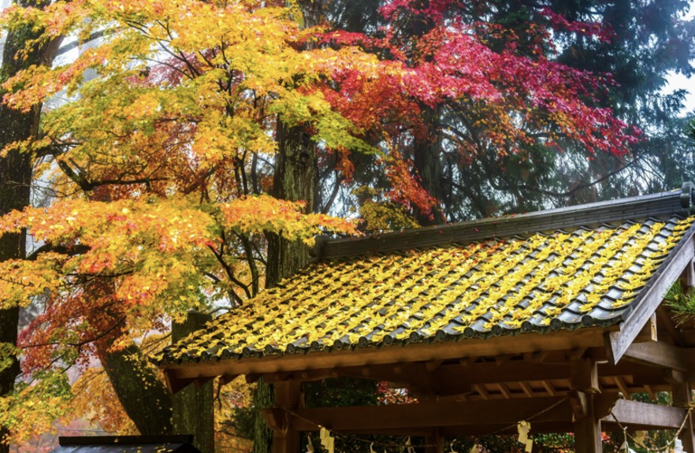
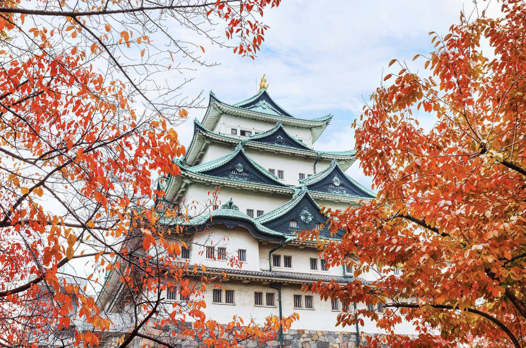
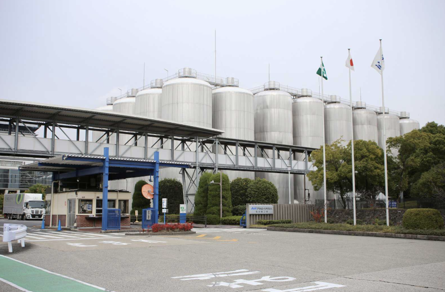
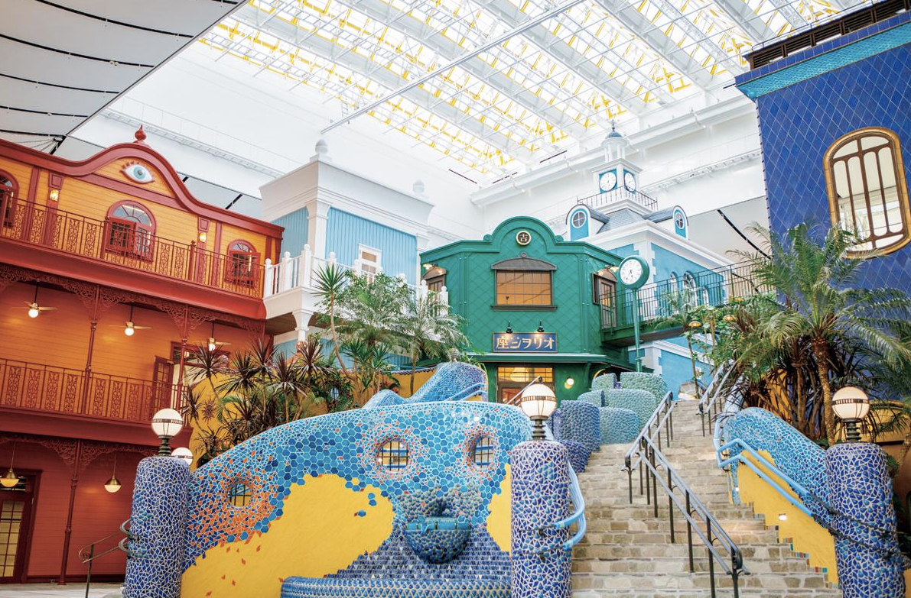
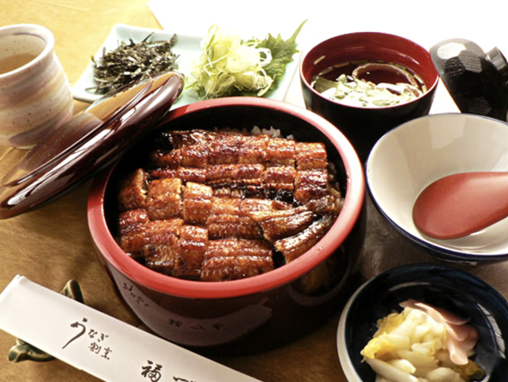
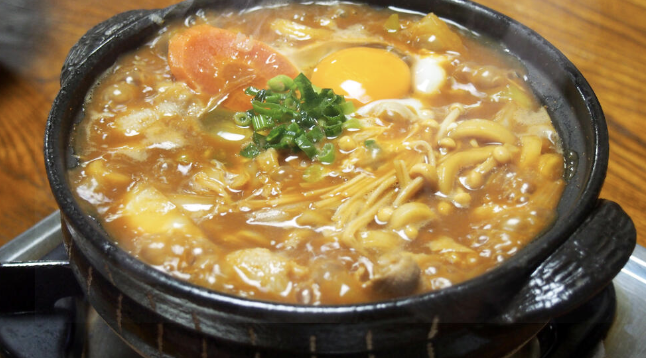
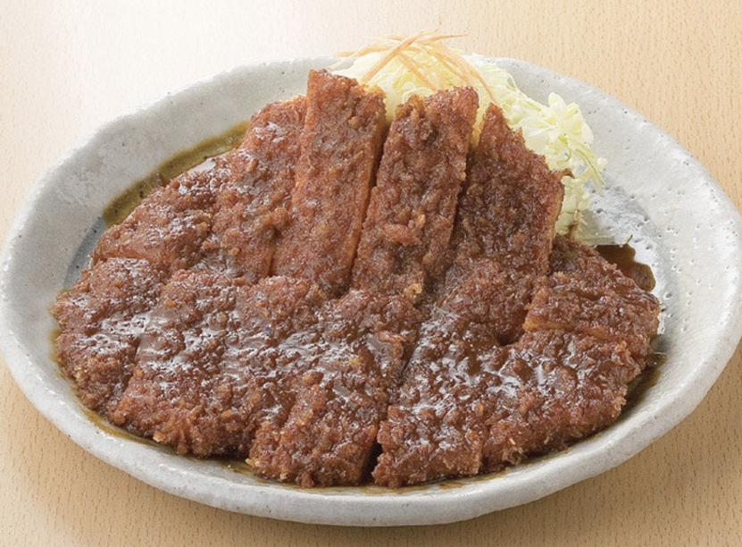

1. 나고야에 대해 알아보자

일본 아이치현의 최대 도시이자 일본에서 4번째로 인구가 많은 대도시이다. 크기와 인구수에 비해 놀거리와 관광지로서의 존재감은 약해 마치 한국의 대전광역시를 연상케한다. 우리가 역사책에서 들어본 도요토미 히데요시, 도쿠가와 이에야스가 나고야 출신이라서 이들을 기리는 축제도 열린다. 작은 도시였지만 공업단지가 들어오면서 도시는 급격하게 커지게 됐고 일한다는 느낌이 강한 도시지만 지금은 관광지로의 발전도 힘쓰고 있다.
2. 나고야의 지리와 기후
내륙성의 가까운 기후로 하루에 기온차가 크다. 여름은 고온다습하며 40도를 기록한적도 있다. 이번 시즌인 겨울은 건조하고 차가운 바람이 부는 우리나라의 서울과 비슷하지만, 눈이 오는 경우가 적어 나고야 여행 중 눈을 보는 것은 행운이라고 한다. 여러 겹 입을 수 있는 옷을 추천한다. 기압 배치 덕분에 맑은 날을 보는 날이 적은 편이라는 특징이 있다. 도시로 급격한 변화를 이루게 되면서 자연스럽게 근교들이 생겨났고 도시에서 조금만 벗어나도 평야와 한적한 주택가들을 볼 수 있다.
3. 나고야에 방문한다면 가볼만한 장소들
1. 나고야성
에도 시대 초기에 지어진 본래 나고야성은 1945년 폭격으로 파괴되었다. 1959년 재건을 통해 본모습을 되찾았지만 내부는 에어컨과 엘리베이터가 있어 현대적인 분위기가 느껴진다. 나고야성은 현재 박물관으로 이용되고 있는데, 성 부지에서는 성문과 성의 구조를 감상하실 수 있다. 나고야하면 생각나는, 가장 관광객이 많이 찾는 장소이다.
2. 아사히 맥주공장
나고야의 특성상, 기업과 산업공장이 많이 있어서 이들 중 하나를 체험해보는 것도 좋다. 우리가 한번쯤은 들어보고 마셔본 아사히 맥주는 나고야에 공장을 두고 있다. 일일 워크숍을 진행해 나만의 맥주를 만들 수 있는 체험을 제공한다. 맥주가 만들어지는 과정을 보고 시원한 아사히 맥주를 체험하면 잊을 수 없는 경험이 될 것이다.
3. TV 타워

현재 일본의 대도시에는 tv 타워들이 하나씩 있다. 그 시작은 나고야였다. 파리의 에펠탑을 본떠서 만든 이 tv 타워는 180m의 높이를 자랑하고 전망대도 방문해 볼 수 있다. 밤에 방문하면 나고야의 밤풍경과 어우러져 아름다운 광경을 볼 수 있다.
4. 지브리파크
2022년에 개장한 따끈따끈한 나고야의 야심작이다. 이제는 나고야 여행을 가는 이유가 되어버리기도 한 상황이다.. 일본의 테마파크 중 가장 큰 크기를 자랑하는데 즐기고 볼 거리가 너무 많아 서술할 수 없을 정도이다.. 스튜디오 지브리에서 만든 애니메이션에 관심이 있다면 남녀노소 방문해보는 것을 추천한다.
4. 나고야의 먹거리 !
1.히츠마부시
지금부터 소개하는 3가지 요리는 나고야만의 요리들이다. 나고야는 나고야메시라는 독특한 식도락 문화가 존재하고, 흔히 아는 일본 음식과는 또 다른 느낌을 줄 것이다. 나고야에 들어서서 음식점 간판을 잘 보면 히츠마부시를 취급하는 가게들을 자주 볼 수 있다. 나고야는 장어가 유명해 퀄리티 좋은 장어덮밥인 히츠마부시를 접할 수 있다. 덮밥 그대로 먹거나, 토핑을 첨가하거나, 육수나 차를 넣어서 자작하게 먹는 등 맛있게 먹는 방법이 많다.
2.미소니코미 우동
나고야의 특산품인 아카미소와 소금없이 물만으로 반죽한 생면이라는 독특한 이 요리는 나고야의 명물이다. 말 그대로 된장 맛이 나는 우동이라 한국인 입맛에 잘 맞는다. 다른 미소된장보다 훨씬 진하고 감칠맛도 강한 나고야의 아카미소로 만들어진 국물과 쉽게 불지 않는 굵은 면은 지금 시즌인 추운 겨울에 저절로 생각날 것이다.
3. 미소카츠
나고야인들의 된장 사랑은 어디까지일까. 이번에는 된장 소스를 활용한 돈가스를 소개한다. 포장마차에서 돼지고기 꼬치를 된장 국물에 찍어먹던 것에서 착안해 만들어진 이 카츠는 생각보다 된장 맛이 약해 처음 먹는 사람도 부담없이 접할 수 있는 맛이라고 한다.